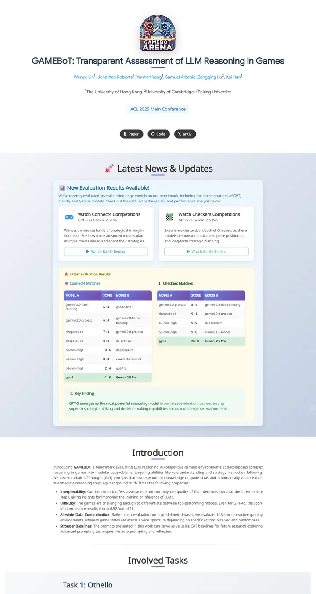
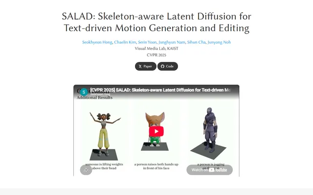

GAMEBoT: Transparent Assessment of LLM Reasoning in Games
整ったゲームアリーナのスコアボード。ネイビーのタイトルの上にマスコットの紋章、その下のひんやりした灰青のグラデーション帯にニュースカードと、すみれ色の見出しのスコア表。

表示されたページと照合済みです。
選んだ理由
オリジナルのロゴが、会議名のピルとセクション見出しのアクセント下線を備えたすっきりしたヘッダーを飾っています。柔らかなグラデーション帯には、よくできたニュースカードと、行がハイライトされたスコア表が収まっています。階層と余白が全体を通して一貫しています。
以下の説明と DESIGN.md 本文は英語です。コーディングエージェントが同じ一つの版を読めるよう、翻訳していません。
概要
カラーパレット
タイポグラフィ
Google Sans
GAMEBoT: Transparent Assessment of LLM Reasoning in Games
Abstract · Method · Results · BibTeX — 0123456789
Noto Sans
GAMEBoT: Transparent Assessment of LLM Reasoning in Games
Abstract · Method · Results · BibTeX — 0123456789
余白と形
ページの構成要素
ガイドライン
似たスタイル

InstructPart: Task-Oriented Part Segmentation with Instruction Reasoning
グレーと白の縞模様の実験ノート。タイトルは自らのキーワードをティールで示し、破線パネルのやかんが、一行も読まないうちにタスクを説明してくれる。

Symmetrical Visual Contrastive Optimization: Aligning Vision-Language Models with Minimal Contrastive Images
2色で組み立てた主張。シアンは一致する画像、オレンジは一致しない画像を意味し、その色のコードは本文のハイライトから、グレーと白が交互に続く帯の上のすべての図まで途切れずに続く。

Slamming: Training a Speech Language Model on One GPU in a Day
グラフひとつで語る主張。ティーザー動画があるはずの場所に注釈付きの大きなスケーリングプロットを置き、続いてグレーのアブストラクトと、GPU 予算のタグが付いたオーディオプレーヤーの静かなグリッド。

Peeking Ahead of the Field Study: Exploring VLM Personas as Support Tools for Embodied Studies in HCI
白い机にテープで開いて留めたフィールドノート。背の高い淡いグレーの見出し、空色で長く連なる名前、そしてサーモンから砂色へ移ろう3コマの絵コンテが研究を説明する。

Reflection Separation from a Single Image via Joint Latent Diffusion
ひと引きで拭い去れる、夜のガラス一枚。

SALAD: Skeleton-aware Latent Diffusion for Text-driven Motion Generation and Editing
静かに組版されたモノグラフ。グレーと白の図版が一枚ずつめくられていく。